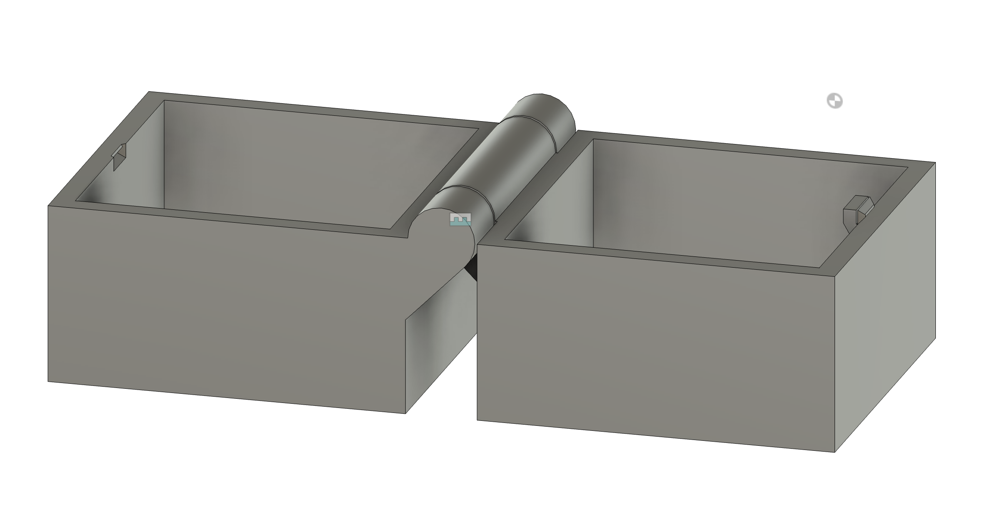
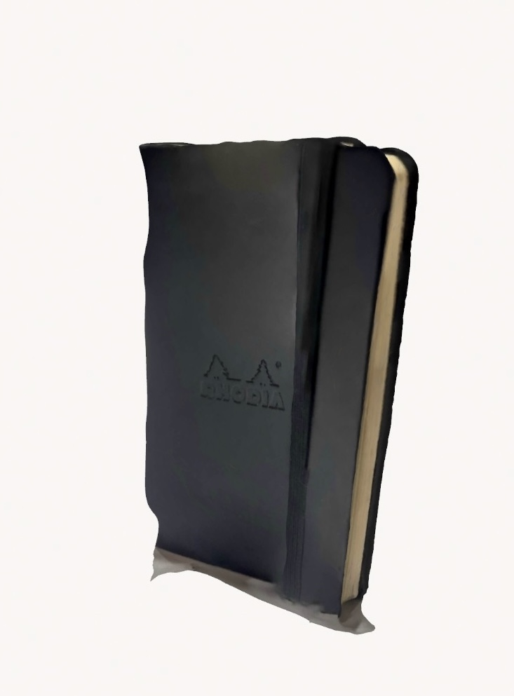

<div class="textcontainer">
<p class="margin"> </p>
<h3>Week 5: 3D Design & Printing</h3>
<h4>Assignment: Model and 3D Print Something</h4>
<p>I designed a print-in-place box with a working hinge. This type of part can’t be made subtractively because the hinge is printed fully assembled in one piece.</p>
<p>I first created a standard box which is hollow, then I watched a youtube tutorial on how to make a hinge, and finally I experimented a bit to create a little clasp/clip to keep the box closed.</p>
<div style="margin: 20px 0;">

<img src="printinplacebox.gif" width="400">
</div>
<h5>Download My Files:</h5>
<a href="./week 5.zip" download>Download Week 5 Files (ZIP)</a>
<h4>Scan: Polycam Photogrammetry</h4>
<p>I used Polycam to scan a notebook. I had trouble scanning using my phone since my camera is a bit damaged so this is the best model I created after several attempts. Will try making a better model in the future using a different scanner.</p>
<div style="margin: 20px 0;">

</div>
<h5>Download My Scan:</h5>
<a href="./polycamscan.zip" download>Download Scan Files</a>
<h4>Final Project Planning</h4>
<img src="Shopify Counter PDP-min.webp" width="300">
<ul>
<li><strong>Project:</strong> Mechanical Shopify-style Counter - a 3D-printed 5-digit rolling counter inspired by Shopify’s retail display unit</li>
<li><strong>Bill of Materials:</strong> ESP32 microcontroller, 5x servo motors, jumper wires, PLA filament, external 5V power supply, custom 3D-printed digit wheels</li>
<li><strong>Timeline:</strong>
<ul>
<li>Week 1: Design gear mechanism + print digit wheels</li>
<li>Week 2: Connect servos + ESP32 logic</li>
<li>Week 3: Build housing + program number update logic</li>
<li>Week 4: Test + debug</li>
</ul>
</li>
<li><strong>Goals:</strong> Display numbers from 00000 to 99999 in real time using motor-driven digits. Eventually connect to a live API (e.g. Shopify order count) for auto-updates.</li>
</ul>
</div>